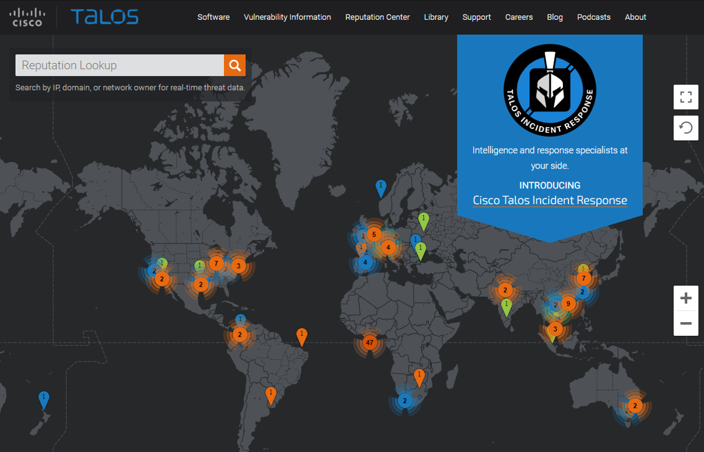

20.2.1 Cisco Talos
Los servicios de inteligencia de amenazas permiten el intercambio de información, como vulnerabilidades, indicadores de riesgo (IOC, Indicator of compromise) y técnicas de mitigación. Esta información no solo se comparte con el personal, sino también con los sistemas de seguridad. A medida que surgen las amenazas, los servicios de inteligencia contra amenazas crean y distribuyen reglas de firewalls e IOC para los dispositivos que se han suscrito al servicio.

Uno de estos servicios es Cisco Talos Threat Intelligence Group (Grupo de Inteligencia contra Amenazas), que se muestra en la imagen. Cisco Talos es uno de los equipos de inteligencia contra amenazas comerciales más grandes del mundo, compuesto por investigadores, analistas e ingenieros de clase mundial. El objetivo de Talos es ayudar a proteger los usuarios, datos e infraestructura empresariales de adversarios activos. El equipo de Talos recopila información sobre las amenazas activas, existentes y emergentes. Luego, proporciona a sus suscriptores una protección completa contra ataques y malware.
Los productos de Seguridad de Cisco pueden usar la inteligencia contra amenazas de Talos en tiempo real para brindar soluciones de seguridad rápidas y efectivas. Cisco Talos también ofrece software, servicios, recursos y datos gratuitos. Talos mantiene los conjuntos de reglas de detección de incidentes de seguridad para las herramientas de seguridad de red: Snort.org, ClamAV y SpamCop.
20.2.2 FireEye
FireEye es otra empresa de seguridad que ofrece servicios para ayudar a las empresas a proteger sus redes. FireEye utiliza un enfoque triple que combina la inteligencia de seguridad, la experiencia en seguridad y la tecnología.
FireEye ofrece SIEM y SOAR con la plataforma de seguridad Helix , que utiliza análisis de comportamiento y detección avanzada de amenazas y cuenta con el apoyo de la red mundial de inteligencia contra Amenazas FireEye Mandiant. Helix es una plataforma de operaciones de seguridad alojada en la nube que combina diversas herramientas de seguridad e información sobre amenazas en una sola plataforma.
Este sistema bloquea ataques de vectores de ataque web y de correo electrónico, y malware latente que reside en recursos compartidos de archivos. Puede bloquear malware avanzado que fácilmente supera las defensas tradicionales basadas en firmas y pone en riesgo la mayoría de las redes empresariales. Aborda todas las etapas del ciclo de vida de un ataque con un motor sin firma que usa análisis de ataques con estado para detectar amenazas zero-day.
Para ver los recursos de inteligencia de seguridad que ofrece FireEye, buscar "FireEye" en internet.
20.2.3 Intercambio automático de indicadores
El Departamento de Seguridad Nacional (The U.S. Department of Homeland Security DHS) de EE. UU. ofrece un servicio gratuito llamado Intercambio automático de indicadores (Automated Indicator Sharing AIS). AIS permite el intercambio en tiempo real de los indicadores de ciberamenazas (por ejemplo, direcciones IP maliciosas, la dirección del remitente de un correo electrónico de suplantación de identidad, etc.) entre el gobierno federal de EE. UU. y el sector privado.
AIS crea un ecosistema donde, apenas se reconoce una amenaza, se comparte la información inmediatamente con la comunidad para ayudar a proteger las redes de esa amenaza específica.
Busque en Internet el servicio "DHS AIS" para obtener más información.
20.2.4 Base de datos de Vulnerabilidades y Exposiciones Comunes (Common Vulnerabilities and Exposures CVE)
El gobierno de los Estados Unidos patrocinó la Corporación MITRE para crear y mantener un catálogo de amenazas de seguridad conocidas, denominado Vulnerabilidades y exposiciones comunes (CVE, Common Vulnerabilities and Exposures). El CVE funciona como un diccionario de nombres comunes (es decir, identificadores de CVE) de vulnerabilidades de ciberseguridad públicamente conocidas.
La Corporación MITRE define Identificadores únicos de CVE para vulnerabilidades de seguridad de la información públicamente conocidas a fin de facilitar el uso compartido de datos.
Busque "Mitre Corporation" en Internet y vea información sobre CVE
20.2.5 Estándares de Comunicación de Inteligencia contra amenazas

Las organizaciones y los profesionales de redes deben compartir información para aumentar el conocimiento sobre agentes de amenaza y los activos a los que desean obtener acceso. Numerosos estándares abiertos de uso compartido de inteligencia han evolucionado para permitir la comunicación en múltiples plataformas de redes. Estos estándares permiten el intercambio de inteligencia de ciberamenazas (CTI, Cyber Threat Intelligence) en un formato legible automatizado, uniforme y que las máquinas puedan leer.
Tres estándares de uso compartido de inteligencia de amenazas son los siguientes:
Estos estándares abiertos proporcionan las especificaciones que colaboran al intercambio automatizado de información de inteligencia de ciberamenazas en un formato estandarizado. Busque en Internet para obtener más información sobre STIX, TAXII y CybOX.
La Plataforma de Intercambio de Información sobre Malware (MISP, Malware Information Sharing Platform) es una plataforma de código abierto para compartir indicadores de compromiso para amenazas recién descubiertas. El MISP cuenta con el apoyo de la Unión Europea y es utilizado por más de 6.000 organizaciones de todo el mundo. MISP permite el uso compartido automatizado de IOC entre personas y máquinas mediante STIX y otros formatos de exportación.
20.2.6 Plataformas de Inteligencia contra amenazas
Como hemos visto, hay muchas fuentes de información de inteligencia sobre amenazas, cada una de las cuales puede tener su propio formato de datos. El acceso y el uso de múltiples fuentes de información sobre amenazas puede llevar mucho tiempo. Para ayudar al personal de ciberseguridad a hacer el mejor uso de la inteligencia contra amenazas, las Plataformas de Inteligencia Contra Amenazas (TIP) han evolucionado.
Una plataforma de inteligencia contra amenazas centraliza la recopilación de datos sobre amenazas de numerosas fuentes de datos y formatos. Existen tres tipos principales de datos de inteligencia sobre amenazas. El primero corresponde a los Indicadores de Compromiso (IOC, Indicators of Compromise) El segundo corresponde a Herramientas, Técnicas y Procedimientos (TTP, tools, techniques, and procedures). El tercero corresponde a la información de reputación sobre destinos o dominios de Internet. El volumen de datos de inteligencia sobre amenazas puede ser insmenso, por lo que la plataforma de inteligencia sobre amenazas está diseñada para agregar los datos en un solo lugar y, lo que es más importante, presentar los datos en un formato comprensible y utilizable.
Las organizaciones pueden contribuir a la inteligencia contra amenazas compartiendo sus datos de intrusión a través de Internet, normalmente a través de la automatización. Muchos servicios de inteligencia contra amenazas utilizan datos de suscriptores para mejorar sus productos y mantenerse al día con el panorama de amenazas inmersas en constante cambio.
Los honeypots son redes o servidores simulados que están diseñados para atraer atacantes. La información relacionada con los ataques recopilada de los honeypots se puede compartir con los suscriptores de la plataforma de inteligencia contra amenazas. Sin embargo, alojar honeypots puede ser un riesgo. Basar un honeypot en la nube aísla el honeypot de las redes de producción. Este enfoque es una alternativa atractiva para recopilar información sobre amenazas.